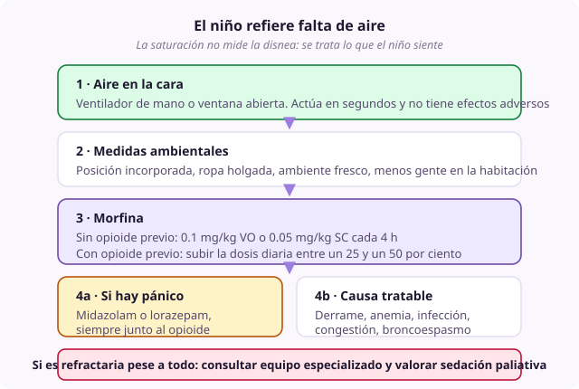

Ficha de síntoma
Disnea
- Dominio
- Respiratorio
- Nivel
- Básico
- Edades
- Cualquier edad
Es la sensación subjetiva de falta de aire, y uno de los síntomas que más angustia genera, tanto al niño como a quien lo acompaña. Su tratamiento de primera línea es la morfina, y el mayor obstáculo para usarla bien es un miedo infundado a la depresión respiratoria.
Por qué ocurre
La sensación nace del desajuste entre lo que el centro respiratorio ordena y lo que el sistema consigue ejecutar. Por eso no depende de la oxigenación: Un niño puede estar al 96 por ciento de saturación y ahogarse, y estar al 88 por ciento y encontrarse tranquilo. La ansiedad amplifica la sensación y cierra un círculo que hay que romper por los dos lados.
Causas
- Enfermedad pulmonar: Infiltración tumoral, neumonía, atelectasia, fibrosis, derrame pleural
- Debilidad muscular respiratoria en enfermedades neuromusculares
- Insuficiencia cardiaca y congestión pulmonar
- Anemia grave
- Ascitis o masa abdominal que limita el descenso del diafragma
- Obstrucción de la vía aérea superior
- Ansiedad y pánico, que casi siempre acompañan y a veces dominan
- Dolor torácico que impide respirar con normalidad
Qué evaluar
- Preguntar directamente por la sensación de falta de aire y usar la escala de Borg modificada si el niño puede autoinformar
- En el niño que no puede, valorar signos observacionales: Uso de músculos accesorios, aleteo nasal, tiraje, incapacidad de completar frases, expresión de angustia
- Registrar qué la desencadena y qué la alivia, y si aparece en reposo o solo con el esfuerzo
- Identificar el componente de pánico, que requiere tratamiento propio
- Valorar si una causa reversible merece estudio: Derrame drenable, anemia corregible, infección tratable
- No usar la saturación como medida de la disnea: Se mide lo que el niño siente, no lo que marca el aparato
Manejo no farmacológico
- Aire fresco dirigido a la cara con un ventilador de mano o una ventana abierta: Es la medida más eficaz, la más barata y la más olvidada
- Posición incorporada a 45 grados o inclinado hacia delante con apoyo en una mesa
- Ambiente fresco, sin humo, con ropa holgada y sin aglomeración de gente alrededor
- Acompañamiento tranquilo y voz pausada: La calma del adulto reduce objetivamente la disnea del niño
- Técnicas de respiración con labios fruncidos y ritmo marcado por el acompañante
- Agrupar las actividades y planificar descansos para reducir el esfuerzo
- Oxígeno solo si el niño está hipoxémico y solo si mejora su sensación: Si no mejora, se retira
Manejo farmacológico
- Morfina
- Sin opioide previo: 0.1 mg/kg VO o 0.05 mg/kg SC cada 4 h. Con opioide previo: Aumentar la dosis diaria entre un 25 y un 50 por ciento. Primera línea en toda disnea. La dosis para disnea es aproximadamente la mitad de la analgésica.
- Midazolam
- 0.05 a 0.1 mg/kg SC, o 0.2 a 0.3 mg/kg por vía bucal o nasal en crisis. Componente de ansiedad o de pánico asociado, siempre junto al opioide y no en su lugar.
- Lorazepam
- 0.02 a 0.05 mg/kg sublingual, máximo 2 mg. Ansiedad de fondo en el niño mayor que puede tragar.
- Dexametasona
- 0.25 a 0.5 mg/kg/día VO o SC. Obstrucción de la vía aérea, linfangitis carcinomatosa o componente inflamatorio.
- Furosemida
- 0.5 a 1 mg/kg VO, IV o SC. Disnea por congestión pulmonar o sobrecarga de volumen.
Cuándo escalar
Si la disnea es de instauración brusca, hay que descartar neumotórax, tromboembolismo, obstrucción de la vía aérea o derrame masivo, valorando siempre si el estudio va a cambiar la conducta. Si es refractaria pese a opioide bien titulado y benzodiacepina, consultar con un equipo especializado y valorar sedación paliativa.
Qué decir a la familia
La morfina en esta dosis no le va a parar la respiración: Lo que hace es quitarle la sensación de ahogo. Y lo primero que pueden hacer ustedes, antes que ninguna medicina, es ponerle aire en la cara con un abanico o un ventilador pequeño.
Qué evitar
- No usar morfina por miedo a la depresión respiratoria, que es el error más frecuente y el que más sufrimiento produce
- Poner oxígeno de forma automática sin comprobar si mejora la sensación del niño
- Tratar la disnea solo con benzodiacepinas: La primera línea es el opioide
- Guiar el tratamiento por la saturación en lugar de por lo que el niño siente
- Llenar la habitación de gente y de aparatos, que aumenta la sensación de ahogo
- No dejar prescrito un rescate para la crisis de disnea en el domicilio
Perla clínica
El ventilador de mano dirigido a la cara actúa sobre los receptores del trigémino y reduce la sensación de disnea de forma medible. Es lo primero que hay que enseñar a la familia, funciona en segundos y no tiene ningún efecto adverso.

disnea morfina ventilador pánico saturación